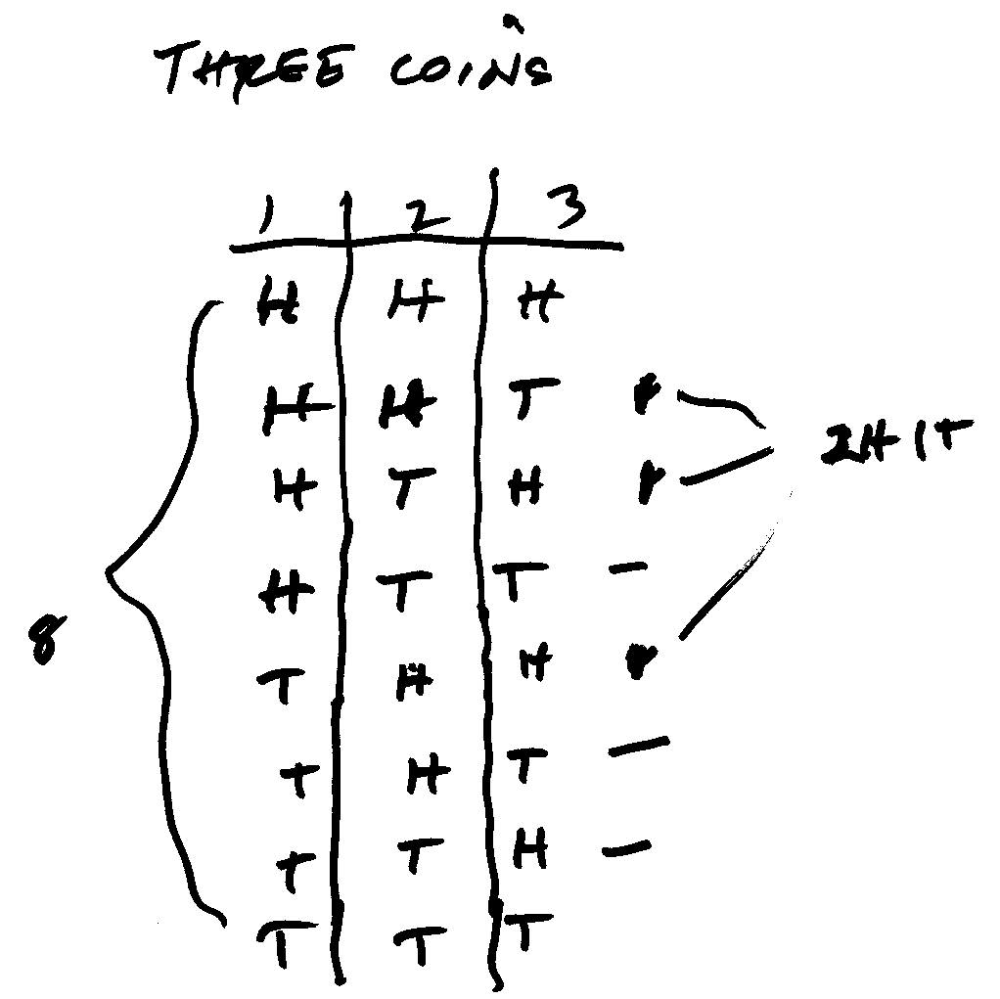
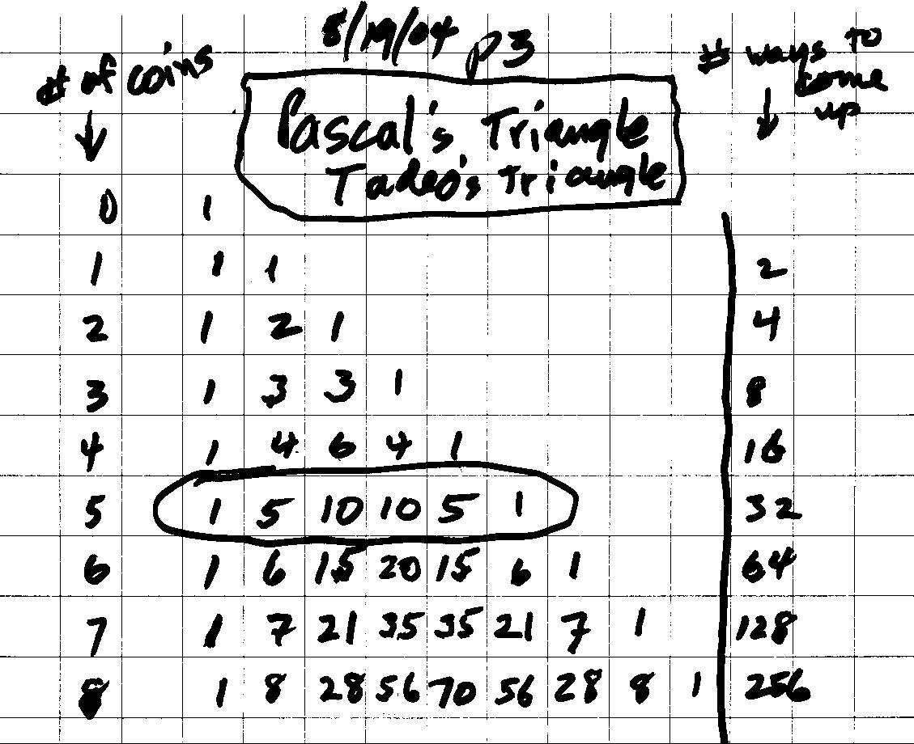

Tossing pennies gets the binomial expansion and probability/Chapter 9
Don worked for a short time with Tadeo, in Argentina via IM in 2004 and 2005. Tadeo figured out how many ways 3 coins could come up-8. Don made an organized table below to show these:

In the table below we kept track of the information above. So for 3 coins there would be 8 ways they could come up. The 3rd row shows the information above, that there is 1 way for 3 Heads to come up, 3 ways for 2 Heads and 1 Tail to come up, 3 ways for 1 Head and 2 Tails to come up, and 1 way for 3 Tails to come up- 1 3 3 1 in row 3, for a total of 8 ways they can come up. Tadeo found some patterns in this triangle of numbers- known as Pascal's triangle or Tadeo's triangle.

Don showed Tadeo another way to write this information in the 3rd row below. Then he saw that if the probability of getting a Head, H = 1/2 and the probability of getting a Tail T= 1/2, then the probability of getting 3 heads and 0 tails is 1* (1/2)3*(1/2)0 = 1/8.
Some other questions you could work on:
What is the probability, when you flip 3 coins, that you will get at least 2 Heads?
What is the probability, when you flip 5 coins, that you will get exactly 3 Heads?
Make up other probability questions.
A new way to show statistics (using Gapminder.org) by Hans Rosling on TED